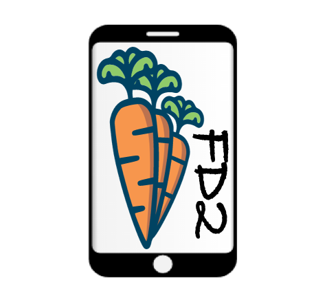

FarmData2 aims to extend farmOS by adding data input forms, reporting, and analytics that support the day-to-day operation of diversified vegetable farms, while also facilitating the keeping of records necessary for organic certification and for the study of sustainable farming practices.
The fork of Farmdata2 used for the FD2 School activities contains features for recording the following activities: